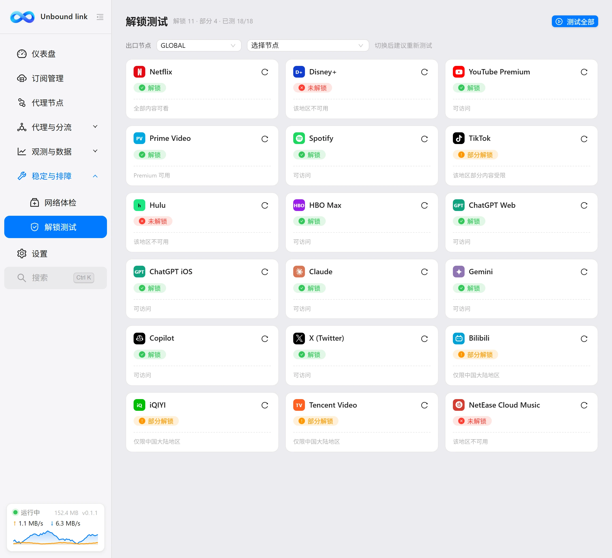
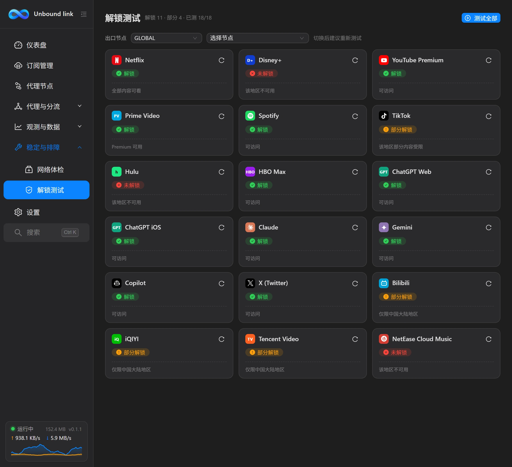

使用手册
解锁测试
解锁测试会经当前出口依次访问 18 个常用服务，给出「解锁 / 部分解锁 / 未解锁 / 失败」的结论，用来判断这条线路能不能看流媒体、用 AI。


这一页解决什么
「换了新节点，Netflix 还能看吗？」「ChatGPT 突然登不上了？」——这类问题不需要挨个打开网站验证。本页一次性检测 18 项服务，尽快给出结论。检测经本地混合端口出网，与日常上网走同一条代理链路，所以测得的是当前出口节点的真实结果；换一条线路，结论可能完全不同。
怎么用
- 确认出口：页头「出口节点」行有两个下拉框——先选分组、再选节点，可以在本页直接切换，节点名后带延迟；
- 开始测试：点右上角「测试全部」并发检测 18 项；也可以只点某张卡片右上角的刷新图标，单独测一项；
- 读结果：页头副标题实时汇总「解锁 N · 部分 N · 已测 N/18」，每张卡片显示状态徽章与一句说明。
结果状态怎么看
| 状态 | 含义 |
|---|---|
| 待检测 | 还没测过。点卡片右上角的刷新图标即可单独检测。 |
| 解锁 | 该服务在当前出口完全可用。 |
| 部分解锁 | 能访问，但内容有限。典型是 Netflix 的「仅自制剧可看」。 |
| 未解锁 | 明确不可用，详情里会给出 HTTP 状态码或地区提示。 |
| 失败 | 请求本身没有完成（超时、代理不通等），不代表服务不可用。先检查内核与节点状态，再重新检测。 |
检测是怎么做的
每项检测都经本机混合端口发出请求，模拟浏览器 User-Agent，单次请求超时 12 秒。不同服务的判定方式不同：
- Netflix：用两部剧交叉验证——先访问一部原创剧，返回 200 再测一部非原创剧。都可达为「解锁」，仅原创剧可达为「部分解锁」，否则未解锁。
- Disney+ / Prime Video / Spotify / TikTok：主页可达且页面没有「地区不可用」提示，即为解锁。
- Hulu / HBO Max：被重定向到区域提示页，或页面出现限制文案，判为未解锁。
- ChatGPT Web：返回 403 判为地区不支持；ChatGPT iOS 则探测长期稳定的移动端状态接口。
- Bilibili：通过站内接口读取出口在 B 站侧的地区判定——中国大陆为全量内容，港澳台与境外为部分受限。
- Claude / Copilot / Gemini / X / 爱奇艺 / 腾讯视频 / 网易云音乐：探测主页可达性，地区限制会体现为 403 或跳转到提示页。
支持的服务
共 18 项，覆盖海外流媒体、AI 服务与国内平台：
| 服务 | 类别 | 检测点 |
|---|---|---|
| Netflix | 流媒体 | 原创剧 + 非原创剧双验证，可识别「仅自制剧」。 |
| Disney+ | 流媒体 | 主页可达性与地区限制提示。 |
| YouTube Premium | 流媒体 | Premium 订阅页的地区可用性。 |
| Prime Video | 流媒体 | 主页可达性。 |
| Spotify | 流媒体 | 主页可达性。 |
| TikTok | 流媒体 | 主页可达性。 |
| Hulu | 流媒体 | 仅美国可用，可识别区域跳转。 |
| HBO Max | 流媒体 | 地区引导页识别。 |
| ChatGPT Web | AI 服务 | 网页版可达性（含 403 判定）。 |
| ChatGPT iOS | AI 服务 | 移动端状态接口，长期稳定的检测点。 |
| Claude | AI 服务 | 主页可达性，403 判为地区不支持。 |
| Gemini | AI 服务 | 地区不支持时会被重定向到 Google 帮助页。 |
| Copilot | AI 服务 | 主页可达性，403 判为地区不支持。 |
| X (Twitter) | 社交 | 主页可达性。 |
| Bilibili | 国内平台 | 站内接口地区判定（大陆 / 港澳台 / 境外）。 |
| iQIYI | 国内平台 | 主页可达性。 |
| Tencent Video | 国内平台 | 主页可达性。 |
| NetEase Cloud Music | 国内平台 | 主页可达性。 |
一句话理解
解锁测试测的不是「这个服务存不存在」，而是「经当前这条线路访问它，此刻是什么结果」。结论代表探测时刻的出口情况，切换节点后请重新测试。